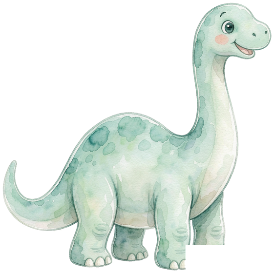
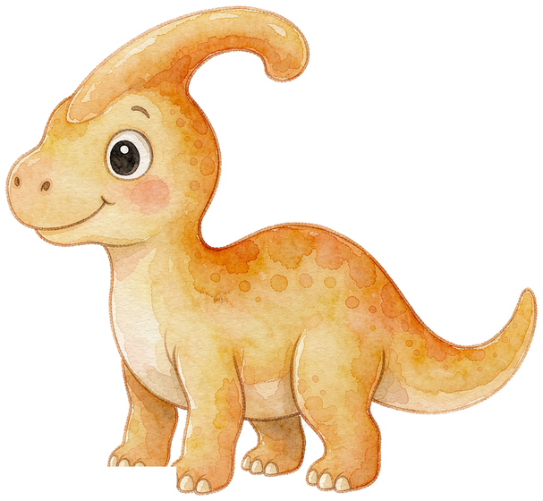
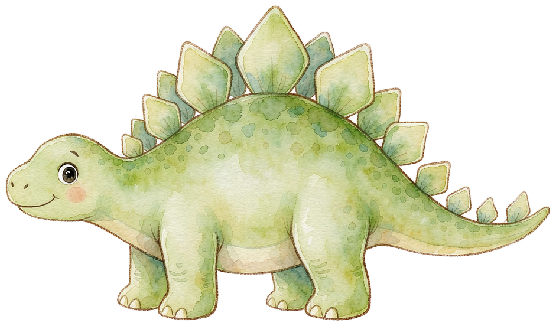
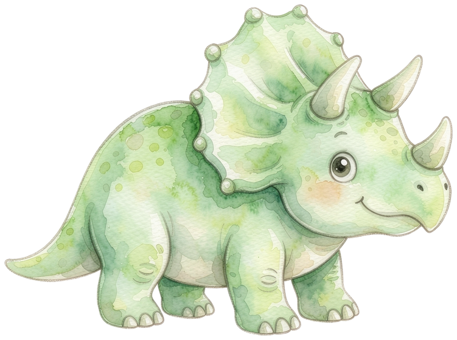
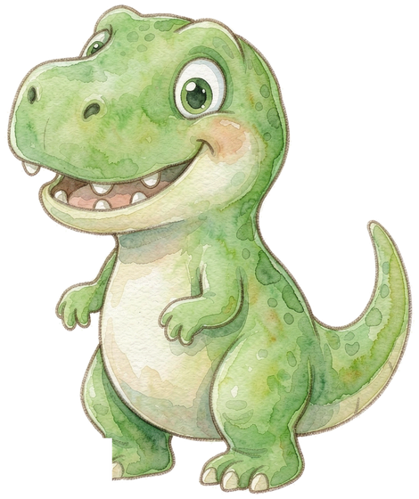

50 首必背诗词读一读、听一听、背一背，还能进「笠翁对韵」跟古人学对仗，点亮你的诗卡！
去读诗 →守株待兔、乌鸦喝水、龟兔赛跑……50 个经典故事和成语，点开就能听，听完打个卡！
去听故事 →恐龙时代 · 动物世界 · 星空宇宙 · 世界国旗……边看边答，把知识收进你的图鉴！
进去逛逛 →十二面展厅环廊：转身环顾 12 大主题照片墙，中央还有恐龙骨架展台！
进去逛逛 →图片拼图、七巧板（6 种剪影）、叠积木高塔、迷你魔方——通关还能赢星星！
去拼一拼 →答对题目会捡到树叶、树枝、石头和露珠，攒够了就来合成叶脉书签、化石拓印……
去做手工 →在每片区域完成 2 个关卡，就能找到一页日记。集齐三页，智慧树会告诉你一个秘密……
翻开看看 →收集 12 张图鉴卡，做好叶脉书签和智慧星章，去点亮那座熄灭的旧灯塔！
去看看 →你已经完成了今天的学习游戏时长，
去户外活动活动，明天森林再等你哦！
家长验证：请计算 34 × 12 = ?
请将手机横过来游玩
体验更佳哦